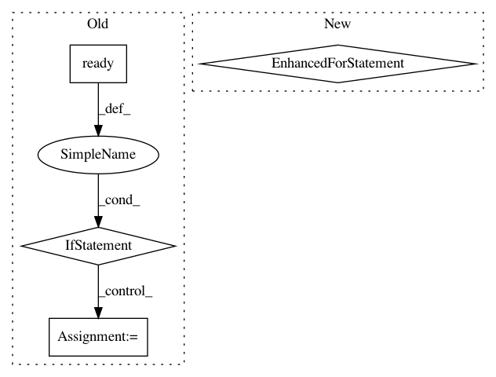

e8767fed61e6180b9ea3a1849c59533cd4ae0417,ilastik/applets/thresholdTwoLevels/thresholdTwoLevelsGui.py,ThresholdTwoLevelsGui,setupLayers,#ThresholdTwoLevelsGui#,266
Before Change
outputLayer.setToolTip("Results of thresholding and size filter")
layers.append(outputLayer)
if op.InputImage.ready():
numChannels = op.InputImage.meta.getTaggedShape()["c"]
for channel in range(numChannels):
channelProvider = OpSingleChannelSelector(parent=op.InputImage.getRealOperator().parent)
channelProvider.Input.connect(op.InputImage)
channelProvider.Index.setValue( channel )
channelSrc = LazyflowSource( channelProvider.Output )
inputChannelLayer = AlphaModulatedLayer( channelSrc,
tintColor=QColor(self._channelColors[channel]),
range=(0.0, 1.0),
normalize=(0.0, 1.0) )
inputChannelLayer.opacity = 0.5
inputChannelLayer.visible = True
inputChannelLayer.name = "Input Channel " + str(channel)
inputChannelLayer.setToolTip("Select input channel " + str(channel) + \
" if this prediction image contains the objects of interest.")
layers.append(inputChannelLayer)
if self._showDebug:
//FIXME: We have to do that, because lazyflow doesn"t have a way to make an operator partially ready
curIndex = self._drawer.tabWidget.currentIndex()
if curIndex==1:
After Change
outputLayer.setToolTip("Results of thresholding and size filter")
layers.append(outputLayer)
for channel, channelProvider in enumerate(self._channelProviders):
channelSrc = LazyflowSource(channelProvider.Output)
inputChannelLayer = AlphaModulatedLayer(
channelSrc, tintColor=QColor(self._channelColors[channel]),
range=(0.0, 1.0), normalize=(0.0, 1.0))
inputChannelLayer.opacity = 0.5
inputChannelLayer.visible = True
inputChannelLayer.name = "Input Channel " + str(channel)
inputChannelLayer.setToolTip("Select input channel " + str(channel) + \
" if this prediction image contains the objects of interest.")
layers.append(inputChannelLayer)
if self._showDebug:
//FIXME: We have to do that, because lazyflow doesn"t have a way to make an operator partially ready
curIndex = self._drawer.tabWidget.currentIndex()
if curIndex==1:
In pattern: SUPERPATTERN
Frequency: 3
Non-data size: 4
Instances
Project Name: ilastik/ilastik
Commit Name: e8767fed61e6180b9ea3a1849c59533cd4ae0417
Time: 2014-05-08
Author: webmaster@burgerdev.de
File Name: ilastik/applets/thresholdTwoLevels/thresholdTwoLevelsGui.py
Class Name: ThresholdTwoLevelsGui
Method Name: setupLayers
Project Name: ilastik/ilastik
Commit Name: 167418e33dce7110afa3d9c7245265ec79f7acb3
Time: 2013-01-29
Author: bergs@janelia.hhmi.org
File Name: ilastik/applets/pixelClassification/pixelClassificationBatchResultsGui.py
Class Name: PixelClassificationResultsViewer
Method Name: setupLayers
Project Name: ilastik/ilastik
Commit Name: 9a3277aa76f7b8374de002e6c72bff142b594cf7
Time: 2012-08-21
Author: bergs@janelia.hhmi.org
File Name: ilastik/applets/featureSelection/featureSelectionGui.py
Class Name: FeatureSelectionGui
Method Name: setupLayers